Explore By District
Discover the unique culture, heritage, and nature across Brunei's four distinct regions.
Brunei-Muara District
The bustling heart of the nation, blending royal heritage with traditional water villages.

Omar Ali Saifuddien Mosque
An architectural masterpiece dominating the capital's skyline with its pure gold dome.
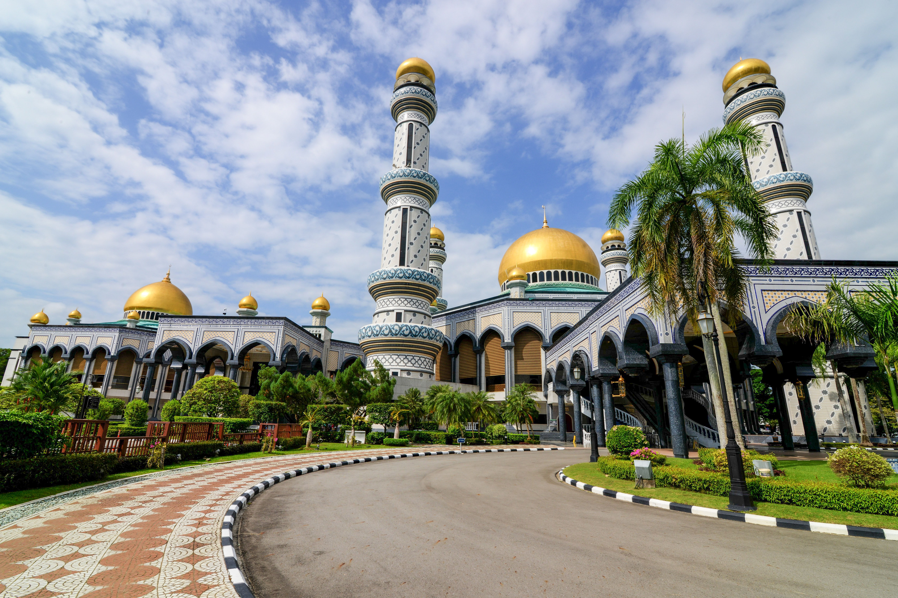
Jame' Asr Hassanil Bolkiah
Brunei's largest mosque, renowned for its majestic multi-tiered golden roofs.

Kampong Ayer
The historic world's largest water village perched above the Brunei River.

Royal Regalia Museum
Houses a vast collection of royal coronation artifacts and ceremonial chariots.
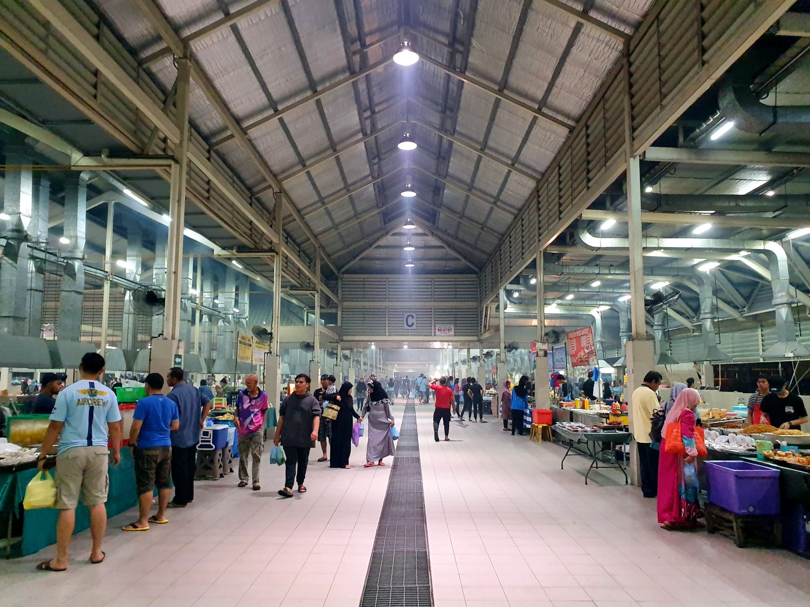
Gadong Night Market
The ultimate destination to sample local Bruneian delicacies and street food.
Temburong District
Known as the green jewel of Brunei, offering pristine rainforests and eco-adventures.

Ulu Temburong National Park
Famous for its thrilling canopy walk tower that offers sweeping views above the misty rainforest.
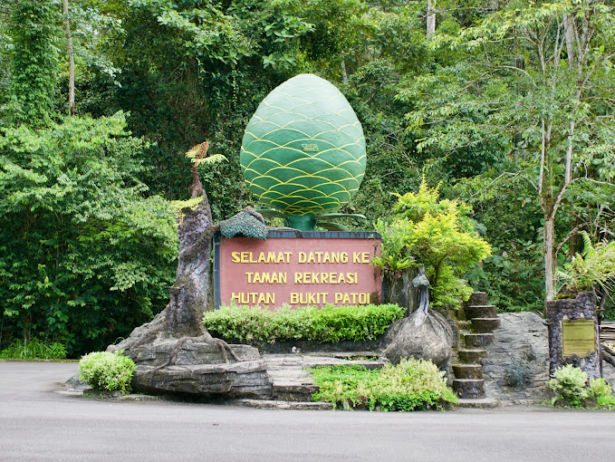
Bukit Patoi Recreational Park
A popular forest reserve featuring winding jungle trails leading to a summit rock shelter with panoramic views.
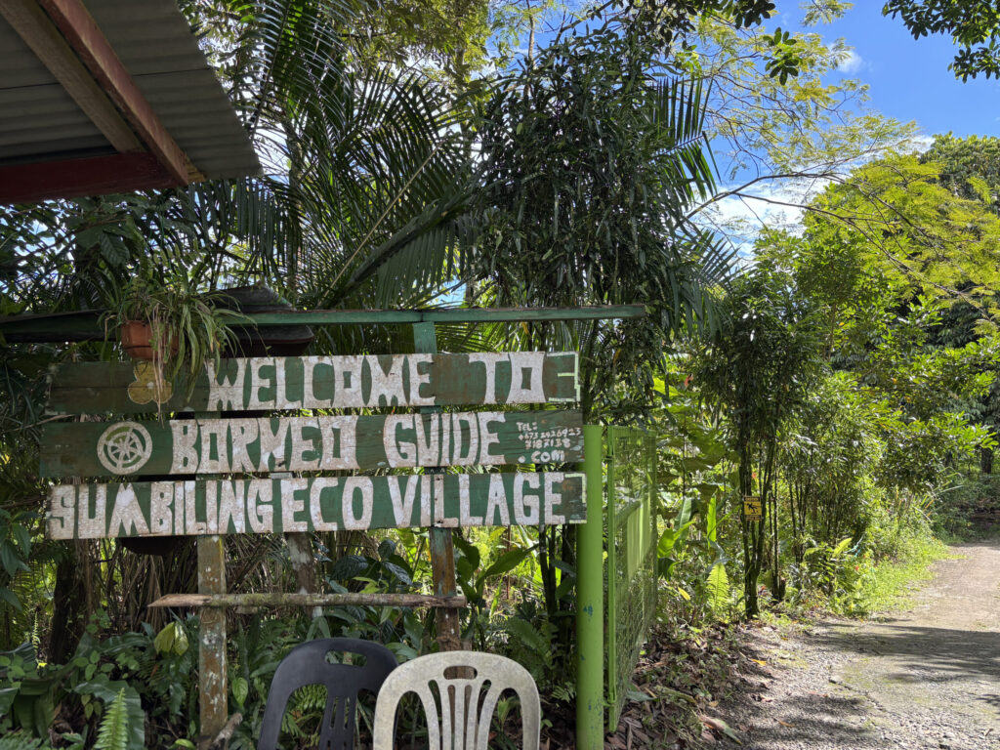
Sumbiling Eco Village
An immersive eco-village managed by the local Iban community, offering cultural immersion.
Tutong District
A district famous for its beautiful beautiful lakes and beaches.
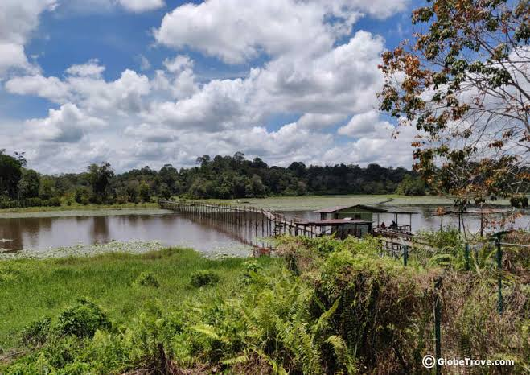
Tasek Merimbun
Brunei's largest natural lake, surrounded by rainforests and featuring a scenic wooden boardwalk winding out over the water.
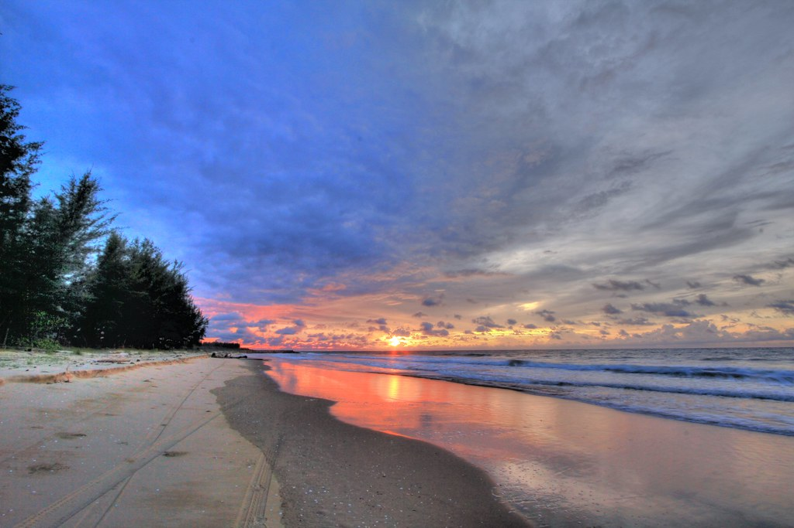
Pantai Seri Kenangan
A stunning coastal spit where the blue waters of the South China Sea meet the calm freshwater current of the Tutong River.
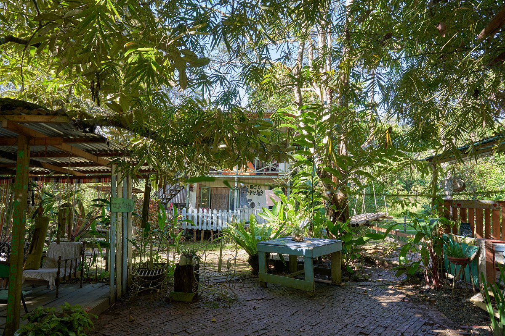
Eco Ponies Garden
A community-driven organic farm and eco-stay in Kampung Lamunin, promoting sustainable living and traditional crafts.
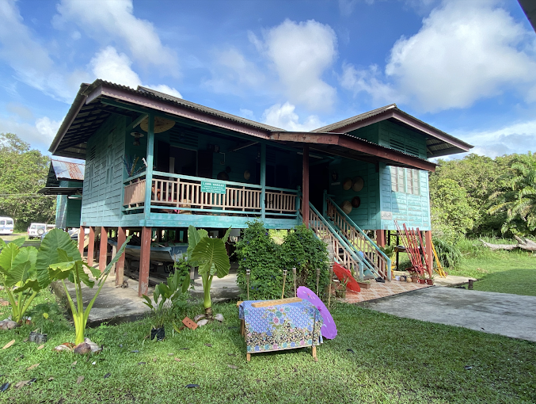
Lamin Warisan
A traditional Malay cultural gallery and homestay showcasing authentic Tutong heritage and indigenous artifacts.
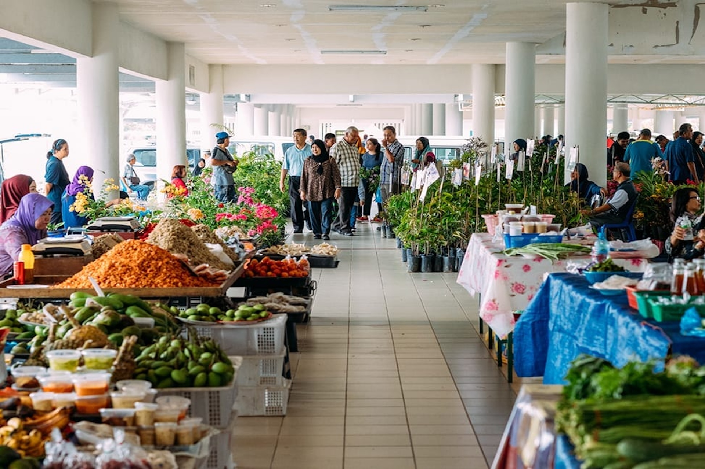
Tamu Tutong
A bustling open-air local market where vendors sell fresh tropical fruits, traditional delicacies, local crafts, and traditional snacks.
Belait District
The industrial center of Brunei's oil and gas industry.
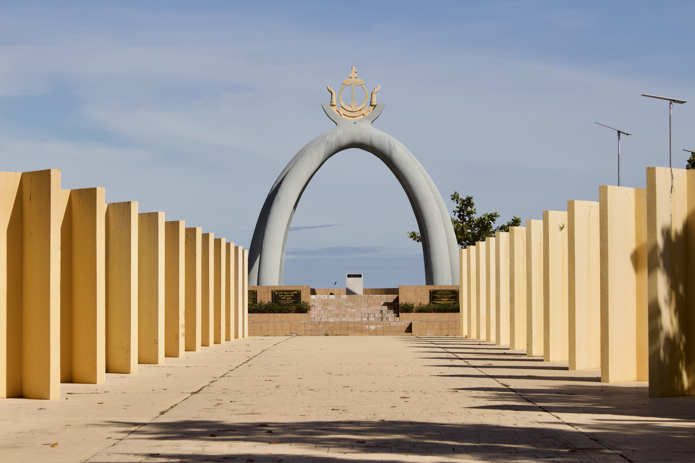
Billionth Barrel Monument
An iconic monument in Seria commemorating the production of the billionth barrel of oil in Brunei's historic petroleum fields.
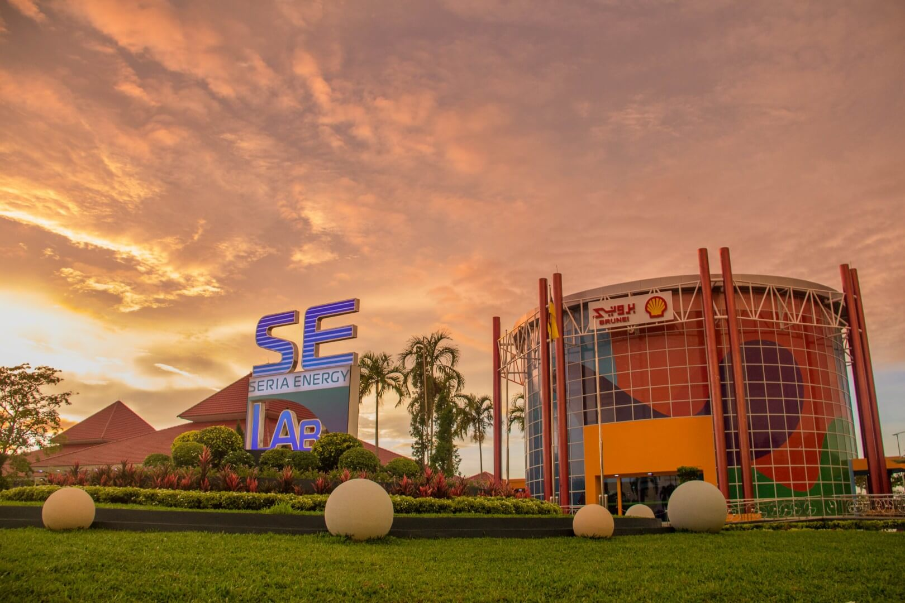
Seria Energy Lab
An interactive, family-friendly science and energy center showcasing Brunei's energy history and technology.
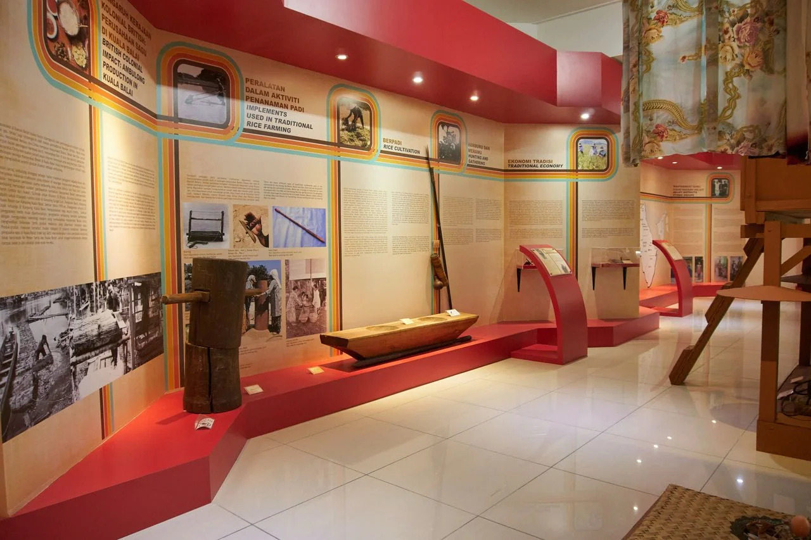
Belait District Museum
A regional museum showcasing the rich cultural history and traditions, and economic evolution of the Belait District.
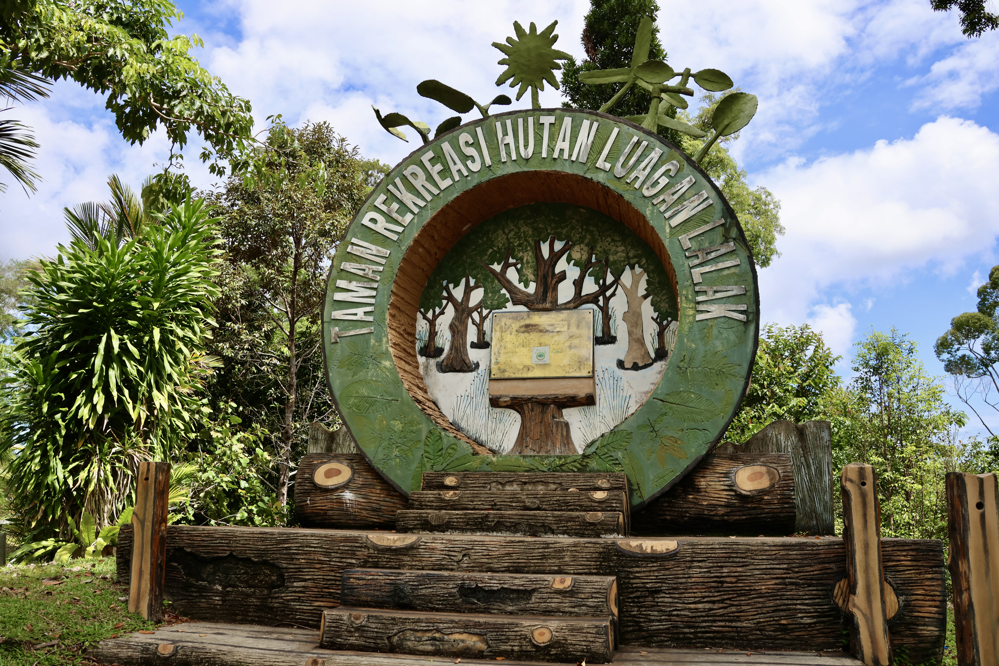
Luagan Lalak Recreation Park
A breathtaking freshwater swamp lake with extensive wooden walkways stretching across the water for peaceful nature viewing.
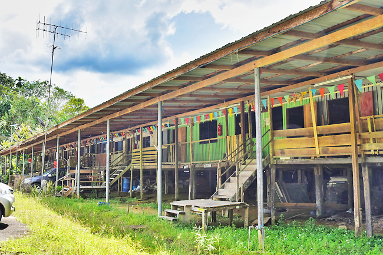
Labi Longhouses
Traditional communal wooden longhouses, offering a glimpse into native Iban lifestyle and heritage.